Autores: Paul J. Steinhardt, David R. Nelson, Marco Ronchetti
Revista: Physical Review B 28, 784 (1983)
Idea central
Paper fundacional que introduce los hoy llamados "parámetros de orden de Steinhardt" (Q_l, W_l) para caracterizar simetría orientacional de enlaces en líquidos sub-enfriados, vidrios y sólidos.
Es la referencia obligatoria para cualquier análisis local de estructura cristalina vs amorfa.
Las dos simetrías rotas
En un cristal se rompen dos simetrías:
- Translational — fase de la modulación de densidad periódica.
- Orientational — los ejes cristalográficos locales están alineados.
Estas simetrías son independientes: un sistema puede tener orden orientacional sin orden translacional → fluidos anisotrópicos (similares a nemáticos), pero referidos a "enlaces" (líneas entre vecinos cercanos) en lugar de a partículas anisotrópicas.
Definiciones
Para cada átomo i con vecinos j:
- Vector de enlace r_ij → ángulos (θ, φ).
- Armónicos esféricos sobre cada enlace: Y_lm(θ, φ).
- Promedio sobre vecinos:
q_lm(i) = (1/N_b) Σ_j Y_lm(r_ij)
-
Invariantes rotacionales:
-
Cuadrático: Q_l = √[(4π / (2l+1)) Σ_m |q_lm|² ]
- Tercer orden (Wigner 3j): W_l
Los valores de Q_l y W_l permiten distinguir entornos icosaédricos, fcc, hcp, bcc, líquidos, vidrios.
Resultados clave
- En un líquido Lennard-Jones sub-enfriado ~10% bajo T_melt aparece un orden orientacional extendido, predominantemente icosaédrico (Q_6 alto, pero sin pico translacional).
- Modelos "amorphon" (clusters icosaédricos) reproducen casi perfectamente las correlaciones orientacionales.
- El Finney random packing muestra solo orden orientacional modesto — los vidrios reales pueden tener más estructura icosaédrica que un random packing pasivo.
Legado
Q_6, Q_4 y W_6 son hoy descriptores estándar en:
- Análisis de cristalización (Lechner-Dellago refinado, etc.).
- Identificación de fases en MD (OVITO, polyhedral template matching).
- Features de entrada para ML estructural ([[Autoencoder_SOAP_cascadas_FeNiCr_DelFre_2025]] menciona Steinhardt entre los descriptores LAE).
Conexiones
- Citado por casi todos los métodos modernos de identificación local: [[FaVAD_fingerprints_defectos_vonToussaint_2020]] lo usa como baseline.
- Complementa [[CGCNN_cristales_Xie_Grossman_2018]] y [[CarNet_tensores_cartesianos_Chen_2025]]: Steinhardt da descriptores hand-crafted, los GNN aprenden los suyos.
- Para tu pipeline LAMMPS/OVITO: Q_6 es la métrica clásica para distinguir bulk fcc vs defectos amorfizados en cascadas (vinculá con [[MD_cascadas_CuNi_irradiacion_Wei_2025]]).
Figuras del Paper (16)

FlG. 1. Different 13-atom particle clusters occurring in liquids near the melting temperature.
FlG. 1. Different 13-atom particle clusters occurring in liquids near the melting temperature.

FIG. 2. Histograms of quadratic and third-order invariants for 13-atom icosahedral, fcc, and hcp clusters, as we11 as for 1S-atom bcc and 7-atom sc clusters. Bonds at the surface are excluded.
FIG. 2. Histograms of quadratic and third-order invariants for 13-atom icosahedral, fcc, and hcp clusters, as we11 as for 1S-atom bcc and 7-atom sc clusters. Bonds at the surface are excluded.

FIG. 3. Symmetry parameter 8'6 for a 13-atom hcp cluster as a function of aspect ratio c/a. The two equilateral triangles above and below the "equatorial plane" of Fig. 1(b) have been stretched along the c axis. The c/a ratio corresponding to hard spheres is ( 3 )'~ .
FIG. 3. Symmetry parameter 8'6 for a 13-atom hcp cluster as a function of aspect ratio c/a. The two equilateral triangles above and below the "equatorial plane" of Fig. 1(b) have been stretched along the c axis. The c/a ratio corresponding to hard spheres is ( 3 )'~ .

FIG. 4. (a) Quadratic invariants QI for a hightemperature LennardJones liquid (solid lines). The dashed lines indicate averages obtained using a randomnumber generator to produce the orientations of an equivalent number of bonds. (b) QI histograms for a supercooled Lennard-Jones liquid. The dependence on the radius (r) of the averaging volume is shown: a dashed line, r=3; dotted-dashed line, r= S, solid line, r=7.
FIG. 4. (a) Quadratic invariants QI for a hightemperature LennardJones liquid (solid lines). The dashed lines indicate averages obtained using a randomnumber generator to produce the orientations of an equivalent number of bonds. (b) QI histograms for a supercooled Lennard-Jones liquid. The dependence on the radius (r) of the averaging volume is shown: a dashed line, r=3; dotted-dashed line, r= S, solid line, r=7.
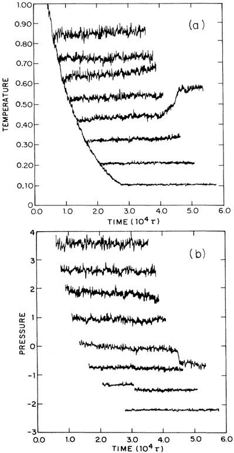
FIR. 5. Time dependence of the (a) temperature and (b) pressure (arbitrary units) for a sequence of moleculardynamics runs. The abrupt changes in the fifth curve from the top at 10 v=4.6 indicates the onset of crystallization. The break in the seventh pressure curve from the top suggests that crystallization may have occurred in this run as well. (The order of samples is the same from top to bottom in the two figures. )
FIR. 5. Time dependence of the (a) temperature and (b) pressure (arbitrary units) for a sequence of moleculardynamics runs. The abrupt changes in the fifth curve from the top at 10 v=4.6 indicates the onset of crystallization. The break in the seventh pressure curve from the top suggests that crystallization may have occurred in this run as well. (The order of samples is the same from top to bottom in the two figures. )
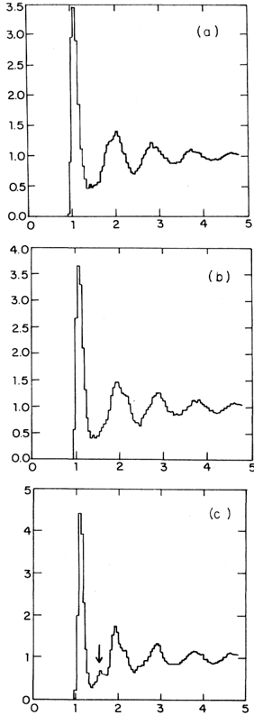
FIG. 6. (a) and (b) show the radial distribution functions (RDF) for the high-( T*=0.719) and low(T*=0. 554) temperature samples whose orientational order is displayed in Fig. 4. (c) shows the RDF for a sample which has crystallized. The extra peak is indicated by the arrow.
FIG. 6. (a) and (b) show the radial distribution functions (RDF) for the high-( T*=0.719) and low(T*=0. 554) temperature samples whose orientational order is displayed in Fig. 4. (c) shows the RDF for a sample which has crystallized. The extra peak is indicated by the arrow.
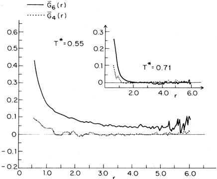
FIG. 7. Orientation correlation functions in highand low-temperature samples.
FIG. 7. Orientation correlation functions in highand low-temperature samples.
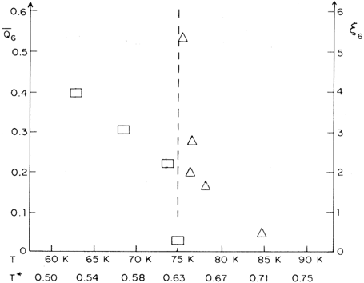
FIG. g. Orientational correlation length g6 (triangles) and "order parameter" Q6 (squares) as a function of temperature. The temperature is given both in reduced units and in units appropriate to liquid argon.
FIG. g. Orientational correlation length g6 (triangles) and "order parameter" Q6 (squares) as a function of temperature. The temperature is given both in reduced units and in units appropriate to liquid argon.
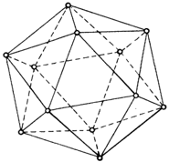
FIG. 9. View of the 12 atoms making up the surfaces of an icosahedron, together with their decomposition into three orthogonal rectangular planes.
FIG. 9. View of the 12 atoms making up the surfaces of an icosahedron, together with their decomposition into three orthogonal rectangular planes.
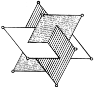
Sin caption
Figura en pagina 16.
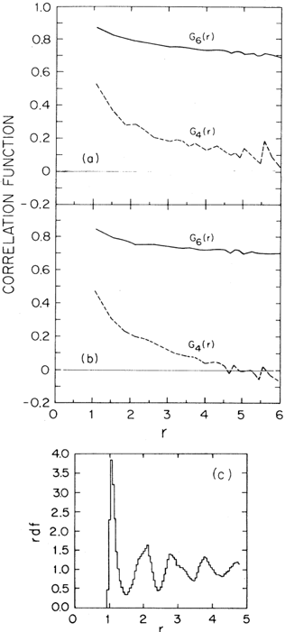
Sin caption
Figura en pagina 17.
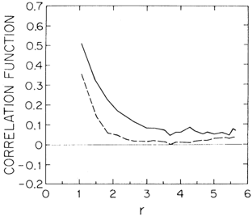
FIG. 10. The orientational correlation function G6(r) obtained by cooling in a small icosahedral field, turning this field off, and then equilibrating (solid line). For comparison, we show G6(r) for a sample cooled at the same rate without an icosahedral field (dashed line). Both samples were cooled more rapidly than in the low-temperature sample shown in Fig. 7.
FIG. 10. The orientational correlation function G6(r) obtained by cooling in a small icosahedral field, turning this field off, and then equilibrating (solid line). For comparison, we show G6(r) for a sample cooled at the same rate without an icosahedral field (dashed line). Both samples were cooled more rapidly than in the low-temperature sample shown in Fig. 7.
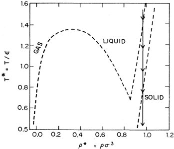
FIG. 12. Phase diagram for a Lennard-Jones liquid (adapted from Ref. 42). The arrow shows the thermodynamic path taken on most of the runs discussed in this paper (p*=0.973). Qualitatively similar results were obtained upon supercooling at a higher density, p*=1. 053.
FIG. 12. Phase diagram for a Lennard-Jones liquid (adapted from Ref. 42). The arrow shows the thermodynamic path taken on most of the runs discussed in this paper (p*=0.973). Qualitatively similar results were obtained upon supercooling at a higher density, p*=1. 053.
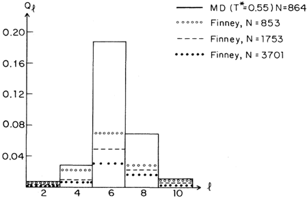
FIG. 13. Orientational order in the relaxed Finney model as a function of averaging size. The solid lines show histograms for a well-ordered molecular-dynamics sample with approximately the same number of particles as in the 853-particle Finney model.
FIG. 13. Orientational order in the relaxed Finney model as a function of averaging size. The solid lines show histograms for a well-ordered molecular-dynamics sample with approximately the same number of particles as in the 853-particle Finney model.
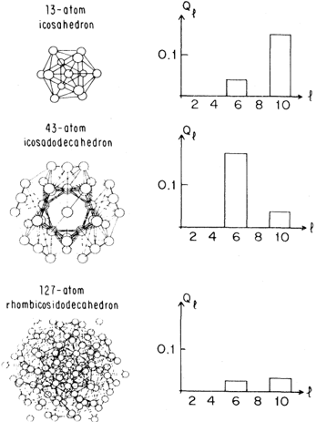
FICx. 14. Qrientational histograms for several of the amorphon clusters discussed in Ref. 11.
FICx. 14. Qrientational histograms for several of the amorphon clusters discussed in Ref. 11.
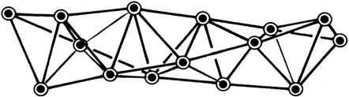
FIG. 15. Spiral packing of tetrahedra discussed by Bernal (Ref. 25).
FIG. 15. Spiral packing of tetrahedra discussed by Bernal (Ref. 25).